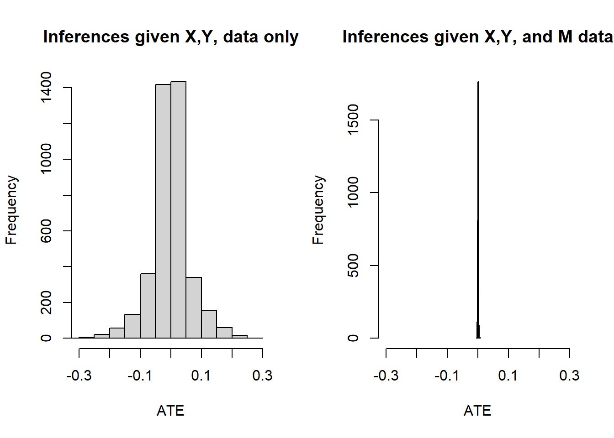
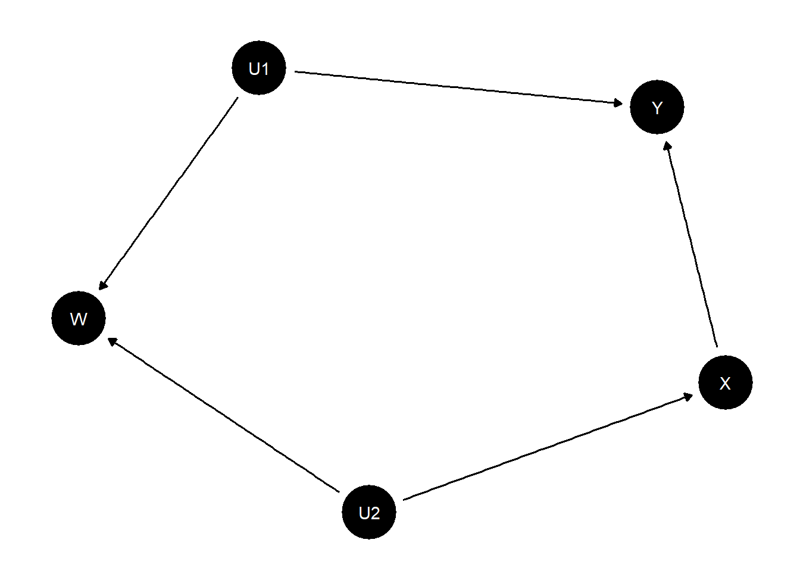

Chapter 9 Identification
9.1 Illustration of the backdoor criterion
Perhaps the most common approach to identifying causal effects in observational research is to condition on possible confounders. The “backdoor” criterion for identifying an effect of \(X\) on \(Y\) involves finding a set of nodes to condition on that collectively block all “backdoor paths” between \(X\) and \(Y\). The intuition is that if these paths are blocked, then any systematic correlation between \(X\) and \(Y\) reflects the effect of \(X\) on \(Y\).
To illustrate the backdoor criterion we want to show that estimates of the effect of \(X\) on \(Y\) are identified if we have data on a node that blocks a backdoor path—\(C\)—but not otherwise. With CausalQueries models however, rather than conditioning on \(C\) we simply include data on \(C\) in our model and update as usual.
model <- make_model("C -> X -> Y <- C") %>%
set_restrictions("(Y[C=1]<Y[C=0])")
# Four types of data: Large, small, door open, door closed
N <- 10000
df_closed_door_large <- make_data(model, n = N)
df_open_door_large <- mutate(df_closed_door_large, C = NA)
df_closed_door_small <- df_closed_door_large[sample(N, 200), ]
df_open_door_small <- df_open_door_large[sample(N, 200), ]
We see that with small \(n\) (200 units), closing the backdoor (by including data on \(C\)) produces a tighter distribution on the ATE. With large \(N\) (10,000 units) the distribution around the estimand collapses when the backdoor is closed but not when it is open.
9.2 Identification: Instruments
We illustrate how you can learn about whether \(X=1\) caused \(Y=1\) by taking advantage of an “instrument,” \(Z\).
We start with a model that builds in the instrumental variables exclusion restriction (no unobserved confounding between \(Z\) and \(Y\), no paths between \(Z\) and \(Y\) except through \(X\)) but does not include a monotonicity restriction (no negative effect of \(Z\) on \(X\)).

result <- query_model(
updated,
queries = list(ATE = "c(Y[X=1] - Y[X=0])"),
given = list(TRUE, "X[Z=1] > X[Z=0]", "X==0", "X==1"),
using = "posteriors")| Query | Given | Using | mean | sd |
|---|---|---|---|---|
| ATE | - | posteriors | 0.602 | 0.033 |
| ATE | X[Z=1] > X[Z=0] | posteriors | 0.673 | 0.031 |
| ATE | X==0 | posteriors | 0.618 | 0.070 |
| ATE | X==1 | posteriors | 0.587 | 0.023 |
We calculate the average causal effect (a) for all (b) for the compliers and (c) conditional on values of \(M\).
We see here that the effects are strongest for the “compliers”—units for whom \(X\) responds positively to \(Z\); in addition they are stronger for the treated than for the untreated. Moreover we see that the posterior variance on the complier average effect is low. If our model also imposed a monotonicity assumption then it would be lower still.
model <- make_model("Z -> X -> Y") %>%
set_restrictions(decreasing("Z", "X")) %>%
set_confound(confound = list(X = "Y[X=1]==1")) | Query | Given | Using | mean | sd |
|---|---|---|---|---|
| ATE | - | posteriors | 0.603 | 0.047 |
| ATE | X[Z=1] > X[Z=0] | posteriors | 0.697 | 0.020 |
| ATE | X==0 | posteriors | 0.618 | 0.099 |
| ATE | X==1 | posteriors | 0.587 | 0.026 |
9.3 Identification through the frontdoor
A less well known approach to identification uses information on the causal path from \(X\) to \(Y\). Consider the following model:
frontdoor <- make_model("X -> M -> Y") %>%
set_confound(list(X = "Y[M=1]>Y[M=0]",
X = "Y[M=1]<Y[M=0]"))
plot(frontdoor)Although in both the instrumental variables (IV) setup and the frontdoor setup we are trying to deal with confounding between \(X\) and \(Y\), the two differ in that in the IV set up we make use of a variable that is prior to \(X\) whereas in the frontdoor model we make use of a variable between \(X\) and \(Y\). In both cases we need other exclusion restrictions: here we see that there is no unobserved confounding between \(X\) and \(M\) or between \(M\) and \(Y\). Importantly too there is no direct path from \(X\) to \(Y\), only the path that runs through \(M\).
Below we plot posterior distributions given observations on 2000 units, with and without data on \(M\):

The spike on the right confirms that we have identification.
9.4 Simple sample selection bias
Say we are interested in assessing the share of Republicans in a population but Republicans are (possible) systematically likely to be absent from our sample. What inferences can we make given our sample?
We will assume that we know when we have missing data, though of course we do not know the value of the missing data.
To tackle the problem we will include sample selection into our model:
model <- make_model("R -> S") %>%
set_parameters(node = c("R", "S"), parameters = list(c(2/3,1/3), c(1/3, 0, 1/3, 1/3)))
data <- make_data(model, n = 1000) %>%
mutate(R = ifelse(S==0, NA, R ))From this data and model, the priors and posteriors for population and sample quantities are:
| Query | Given | Using | mean | sd |
|---|---|---|---|---|
| Q 1 | - | parameters | 0.333 | |
| Q 1 | - | priors | 0.501 | 0.291 |
| Q 1 | - | posteriors | 0.504 | 0.142 |
| Q 1 | S==1 | parameters | 0.500 | |
| Q 1 | S==1 | priors | 0.502 | 0.307 |
| Q 1 | S==1 | posteriors | 0.508 | 0.024 |
For the population average effect we tightened our posteriors relative to the priors, though credibility intervals remain wide, even with large data, reflecting our uncertainty about the nature of selection. Our posteriors on the sample mean are accurate and tight.
Importantly we would not do so well if our data did not indicate that we had missingness.
| Query | Given | Using | mean | sd |
|---|---|---|---|---|
| Q 1 | - | parameters | 0.333 | |
| Q 1 | - | posteriors | 0.492 | 0.008 |
| Q 1 | S==1 | parameters | 0.500 | |
| Q 1 | S==1 | posteriors | 0.492 | 0.008 |
We naively conclude that all cases are sampled and that population effects are the same as sample effects. The problem here arises because the causal model does not encompass the data gathering process.
9.5 Addressing both sample selection bias and confounding
Consider the following model from Bareinboim and Pearl (2016) (their Figure 4C). The key feature is that data is only seen for units with \(S=1\) (\(S\) for sampling).
In this model the relationship between \(X\) and \(Y\) is confounded. Two strategies work to address confounding: controlling for either \(Z\) or for \(W1\) and \(W2\) works. But only the first strategy addresses the sample selection problem properly. The reason is that \(Z\) is independent of \(S\) and so variation in \(Z\) is not affected by selection on \(S\).
To keep the parameter and type space small we also impose a set of restrictions: \(S\) is non decreasing in \(W_1\), \(X\) is not decreasing in either \(W1\) or \(W2\), \(Y\) is not decreasing \(Z\) or \(X\) and \(X\) affects \(Y\) only if \(Z=1\). \(W_2=1\) if and only if both \(W_1=1\) and \(Z=1\). These all reduce the problem to one with 18 nodal types and 288 causal types.
Worth noting that in this model although selection is related to patterns of confounding, it is not related to causal effects: the effect of \(X\) on \(Y\) is not different from units that are or are not selected.
Given these priors we will assume a true (unknown) data generating process with no effect of \(X\) on \(Y\), in which \(W_1\) arises with a \(1/3\) probability but has a strong positive effect on selection into the sample when it does arise.
The estimand values given the true parameters and priors for this model are as shown below.
| Query | Given | Using | mean | sd |
|---|---|---|---|---|
| Q 1 | - | parameters | 0.000 | |
| Q 1 | - | priors | 0.334 | 0.155 |
This confirms a zero true effect, though priors are dispersed, centered on a positive effect.
We can see the inference challenge from observational data using regression analysis with and without conditioning on \(Z\) and \(W_1, W_2\).
| Dependent variable: | |||
| Y | |||
| (1) | (2) | (3) | |
| X | 0.075*** | 0.029* | -0.006 |
| (0.008) | (0.016) | (0.008) | |
| X:W1_norm | 0.163*** | ||
| (0.030) | |||
| X:W2_norm | 0.200*** | ||
| (0.032) | |||
| X:Z_norm | -0.020 | ||
| (0.016) | |||
| Observations | 14,968 | 14,968 | 14,968 |
| R2 | 0.006 | 0.020 | 0.100 |
| Adjusted R2 | 0.006 | 0.019 | 0.100 |
| Residual Std. Error | 0.499 (df = 14966) | 0.495 (df = 14962) | 0.474 (df = 14964) |
| F Statistic | 83.900*** (df = 1; 14966) | 59.800*** (df = 5; 14962) | 554.200*** (df = 3; 14964) |
| Note: | p<0.1; p<0.05; p<0.01 | ||
Naive analysis is far off; but even after conditioning on \(W_1, W_2\) we still wrongly infer a positive effect.
Bayesian inferences given different data strategies are shown below:
| data | mean | sd |
|---|---|---|
| X,Y | 0.066 | 0.013 |
| X,Y, W1, W2 | 0.009 | 0.005 |
| X, Y, Z | 0.011 | 0.005 |
We see the best performance is achieved for the model with data on \(Z\)—in this case the mean posterior estimate is closest to the truth–0–and the standard deviation is lowest also. However the gains in choosing \(Z\) over \(W1, W2\) are not as striking as in the regression estimates since knowledge of the model structure protects us from error.
9.6 Learning from a collider!
Conditioning on a collider can be a bad idea as it can introduce a correlation between variables that might not have existed otherwise (Elwert and Winship 2014). But that doesn’t mean colliders should be ignored in analysis altogether. For a Bayesian, knowledge of the value of a collider can still be informative.
Pearl describes a model similar to the following as a case for which controlling for covariate \(W\) induces bias in the estimation of the effect of \(X\) on \(Y\), which could otherwise be estimated without bias using simple differences in means.
model <- make_model("X -> Y <- U1 -> W <- U2 -> X") %>%
set_restrictions(labels = list(Y = c("0001", "1111"), W = "0001"), keep = TRUE) %>%
set_restrictions("(X[U2=1]<X[U2=0])") %>%
set_parameters(node = c("U1", "Y"), parameters = list(c(1/4, 3/4), c(2/3, 1/3)))
plot(model)
The effect of \(X\) on \(Y\) is .5 but average effects as well as the probability of causation, are different for units with \(W=0\) and \(W=1\) (this, even though \(W\) does not affect \(Y\)):
| Query | Given | Using | mean |
|---|---|---|---|
| Y(1)-Y(0) | - | parameters | 0.500 |
| Y(1)-Y(0) | W==0 | parameters | 0.400 |
| Y(1)-Y(0) | W==1 | parameters | 0.667 |
| Y(1)-Y(0) | X==1 & Y==1 | parameters | 0.600 |
| Y(1)-Y(0) | X==1 & Y==1 & W==0 | parameters | 0.500 |
| Y(1)-Y(0) | X==1 & Y==1 & W==1 | parameters | 0.667 |
These are the quantities we seek to recover. The ATE can be gotten fairly precisely in a simple regression. But controlling for \(W\) introduces bias in the estimation of this effect (whether done using a simple control or an interactive model):
| Dependent variable: | |||
| Y | |||
| (1) | (2) | (3) | |
| X | 0.494*** | 0.446*** | 0.452*** |
| (0.005) | (0.005) | (0.005) | |
| W | 0.195*** | ||
| (0.006) | |||
| W_norm | -0.005 | ||
| (0.008) | |||
| X:W_norm | 0.347*** | ||
| (0.011) | |||
| Constant | 0.334*** | 0.285*** | 0.333*** |
| (0.004) | (0.004) | (0.004) | |
| Observations | 25,000 | 25,000 | 25,000 |
| R2 | 0.250 | 0.284 | 0.311 |
| Adjusted R2 | 0.250 | 0.284 | 0.311 |
| Residual Std. Error | 0.427 (df = 24998) | 0.417 (df = 24997) | 0.410 (df = 24996) |
| F Statistic | 8,352.000*** (df = 1; 24998) | 4,968.000*** (df = 2; 24997) | 3,757.000*** (df = 3; 24996) |
| Note: | p<0.1; p<0.05; p<0.01 | ||
How does the Bayesian model do, with and without data on \(W\)?
Without \(W\) we have:
| Query | Given | Using | mean | sd |
|---|---|---|---|---|
| Y(1)-Y(0) | - | posteriors | 0.496 | 0.005 |
| Y(1)-Y(0) | W==0 | posteriors | 0.362 | 0.114 |
| Y(1)-Y(0) | W==1 | posteriors | 0.669 | 0.004 |
| Y(1)-Y(0) | X==1 & Y==1 | posteriors | 0.599 | 0.005 |
| Y(1)-Y(0) | X==1 & Y==1 & W==0 | posteriors | 0.419 | 0.168 |
| Y(1)-Y(0) | X==1 & Y==1 & W==1 | posteriors | 0.669 | 0.004 |
Thus we estimate the treatment effect well. What’s more we can estimate the probability of causation when \(W=1\) accurately, even though we have not observed \(W\). The reason is that if \(W=1\) then, given the model restrictions, we know that both \(U_1=1\) and \(U_2=1\) which is enough. We are not sure however what to infer when \(W=0\) since this could be due to either \(U_1=0\) or \(U_2=0\).
When we incorporate data on \(W\) our posteriors are:
| Query | Given | Using | mean | sd |
|---|---|---|---|---|
| Y(1)-Y(0) | - | posteriors | 0.496 | 0.005 |
| Y(1)-Y(0) | W==0 | posteriors | 0.394 | 0.007 |
| Y(1)-Y(0) | W==1 | posteriors | 0.669 | 0.004 |
| Y(1)-Y(0) | X==1 & Y==1 | posteriors | 0.599 | 0.005 |
| Y(1)-Y(0) | X==1 & Y==1 & W==0 | posteriors | 0.500 | 0.008 |
| Y(1)-Y(0) | X==1 & Y==1 & W==1 | posteriors | 0.669 | 0.004 |
We see including the collider does not induce error in estimation of the ATE, even though it does in a regression framework. Where we do well before we continue to do well. However the new information lets us improve our model and, in particular, we see that we now get a good and tight estimate for the probability that \(X=1\) caused \(Y=1\) in a case where \(W=0\).
In short, though conditioning on a collider induces error in a regression framework; including the collider as data for updating our causal model doesn’t hurt us and can help us.
References
Bareinboim, Elias, and Judea Pearl. 2016. “Causal Inference and the Data-Fusion Problem.” Proceedings of the National Academy of Sciences 113 (27): 7345–52.
Elwert, Felix, and Christopher Winship. 2014. “Endogenous Selection Bias: The Problem of Conditioning on a Collider Variable.” Annual Review of Sociology 40: 31–53.